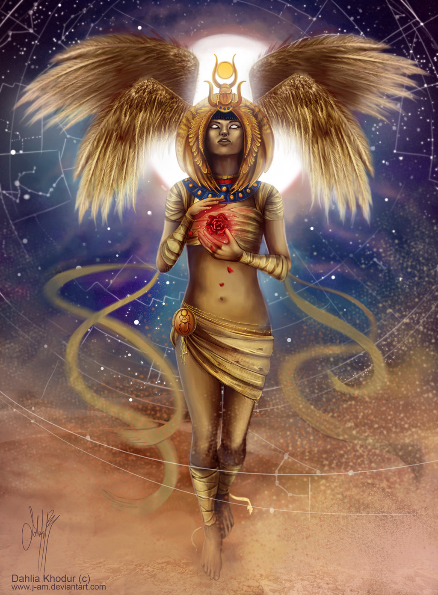
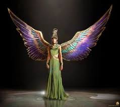
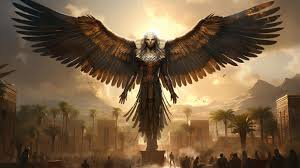

Deities of ancient Egypt were the hundreds of divine beings that were central to their polytheistic religion, governing natural phenomena, social structures, and abstract concepts like the sun, fertility, justice, and the afterlife. Each god and goddess, often depicted in anthropomorphic or zoomorphic forms, played a specific role in maintaining cosmic order, protecting life, and influencing the cycles of the world.
For more information, visit the Wikipedia page on Ancient Egyptian Deities.
Isis with Wings
Isis was the Egyptian goddess of magic, motherhood, and healing. She is often shown with wings, which she used to fan new life into her husband Osiris. Her wings symbolize her protective nature, providing shelter and embracing the deceased.
Nephthys with Wings
Nephthys, the sister of Isis, was a protective goddess of the dead and the night. Her outstretched wings symbolize her guidance and protection for the deceased in the afterlife, often alongside Isis.
Nekhbet Vulture
Nekhbet was the vulture goddess and protector of Upper Egypt and its rulers. She is depicted as a vulture with her wings spread protectively over the pharaoh. As one of the "Two Ladies," she represented Upper Egypt alongside Wadjet of Lower Egypt.